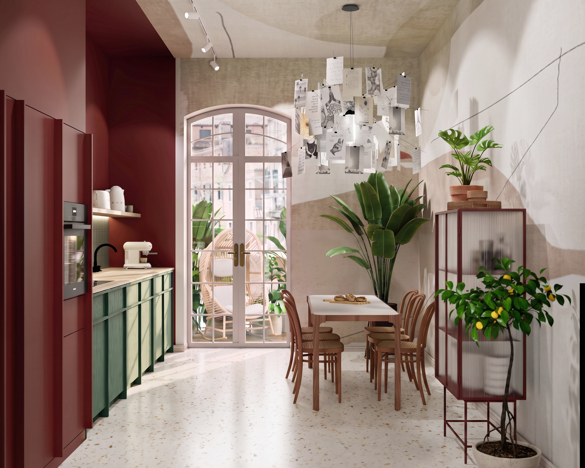
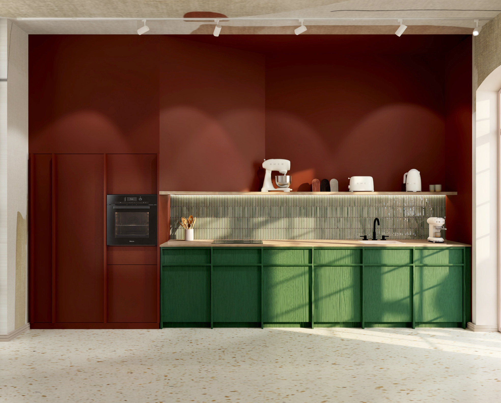
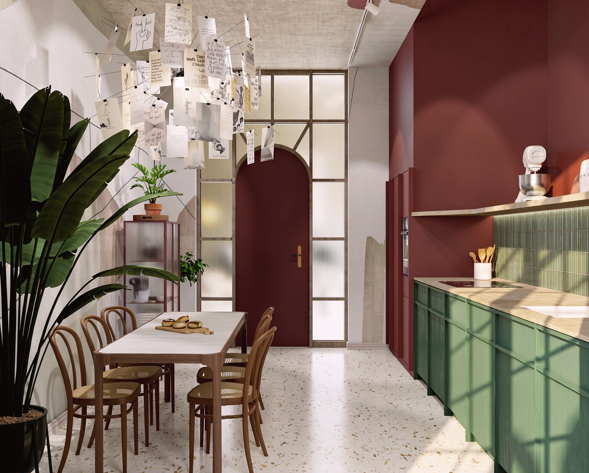

Kitchen




Gestalterisches Statement im Spannungsfeld von historischer Substanz und zeitgenössischem Interior Design.
In dieser Altbauwohnung im Herzen von Venedig verbindet sich historische Bausubstanz mit einem mutigen, zeitgenössischen Gestaltungskonzept. Die Küche wird dabei zum zentralen Raum – funktional und atmosphärisch. Der Boden aus Terrazzo referenziert bewusst die venezianische Bautradition und verankert das Projekt in seinem historischen Kontext. Gleichzeitig bildet er eine ruhige, mineralische Basis für das darüberliegende Farb- und Materialkonzept.
Der Ausblick auf den Kanal sowie der bepflanzte Balkon definieren den Raum maßgeblich.
Das Grün der Vegetation wird als gestalterisches Motiv in den Innenraum übersetzt und findet seine Fortsetzung in der grünen Küchenzeile – als visuelle Verbindung zwischen Architektur, Landschaft und Interior.
Der offene Essbereich ist klar ablesbar vom Küchenbereich getrennt, bleibt jedoch räumlich verbunden. Die rote Farbwelt wird lediglich in reduzierten Akzenten zitiert. Dominant sind Holzoberflächen, warme Erdtöne sowie eine grafische Tapete, die dem Raum eine haptische und atmosphärische Qualität verleihen.
Gezielt eingesetzte Designklassiker fungieren als inhaltliche Ankerpunkte: Leuchten von Ingo Maurer und Sitzmöbel von Thonet ergänzen das Ensemble und verweisen auf eine Entwurfshaltung, die Zeitlosigkeit, Qualität und kulturelle Referenz schätzt.
Tools: 3ds Max & Arnold